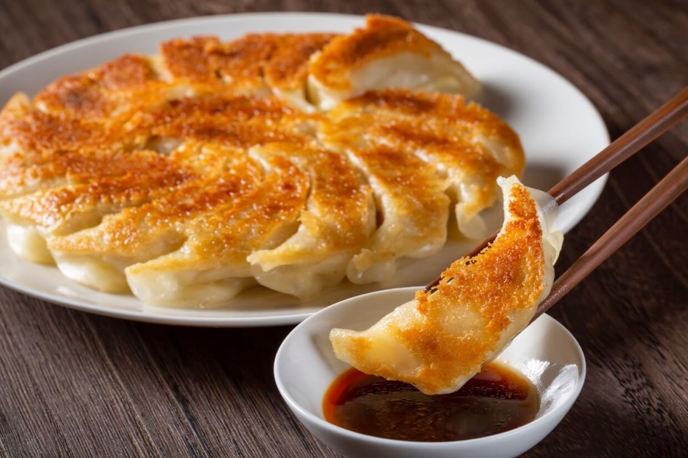

Gyoza

Description
Crispy on the bottom, juicy on the inside, and bursting with savory goodness, gyoza are Japanese dumplings filled with a delightful mix of ground meat, veggies, and bold seasonings. With each bite, they deliver a satisfying crunch followed by a soft, flavorful interior, perfect for dipping in a zesty soy-vinegar sauce.
Ingredients
- 40-45 gyoza wrappers
- 1 1/2 cups green cabbage
- 1 tsp salt
- 500g ground pork (or protein of choice)
- 1 cup garlic chives
- 1 tsp ginger
- 1 tsp seasme oil
- 1 tbsp cornstarch
- 2 tsp soy sause
- 3 tbsp vegetable oil
Directions
- Chop cabbage till very fine and place into a microwavable bowl.
- Massage 1/2 tsp salt into the cabbage and microwave for 40 seconds. Allow the cabbage to cool and then squeeze out water.
- To the bowl, combine all ingredients except the wrappers and vegetable oil.
- Mix well till all ingredients are throughly combined.
- Place a gyoza wrapper on the palm of your non-dominant hand. Dip your finger in water and run your fingers around the edge to wet the edge of the wrapper.
- Place 1 slightly heaping teaspoon of filling into the center of the wrapper and create 4 folds along the top of the gyoza so to seal the top.
- Continue this step until all filling is wrapped.
- Heat 1 tbsp of oil in a pan over medium heat.
- Place gyoza in the pan in a circle, working inwards from the outside. Continue until no more space to place gyoza remain.
- Cook until the underside is lightly brown.
- Add 1/3 cup of water and then cover with a lid until all of the water has evaporated (add extra water if the wrapper is not fully cooked).
- Flip onto large plate and enjoy with your favourite dipping sauce.
Home